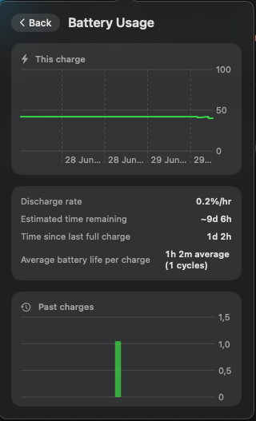

Battery, honestly reported
Live percentage, charging state, and a learned time‑until‑empty estimate built from your mouse's own discharge history — kept per physical device by serial number.
menu bar app · macOS 14+ · Apple Silicon
MacRazer talks to your Razer mouse directly over USB HID — battery, DPI, RGB lighting, polling rate, and button remapping, with no kernel extension, no driver install, and no Synapse.
$ git clone https://github.com/SorcRR/MacRazer.git $ cd MacRazer && swift run MacRazer
Connect over the 2.4 GHz dongle or USB‑C — Razer only exposes its control protocol over USB. Over Bluetooth your mouse is a plain pointer, and so is MacRazer's view of it.
Live percentage, charging state, and a learned time‑until‑empty estimate built from your mouse's own discharge history — kept per physical device by serial number.
One click opens the current discharge curve, drain rate, time since last full charge, and a trend chart across past charge cycles.
A slider bounded to each model's real maximum, the mouse's own onboard preset stages, and a recallable custom value — per device.
125 / 500 / 1000 Hz, switchable from the menu bar without touching Windows.
Static colour via an inline hue/saturation wheel, plus spectrum, wave, off, and a brightness slider.
Side Back/Forward buttons to keyboard shortcuts, mouse clicks, or media keys — software remap via a CGEvent tap, saved per device.
Settings write to the mouse itself where supported, so they persist even when MacRazer isn't running.
Controls a model lacks are hidden automatically — no lighting on the Atheris, no battery UI on wired‑only mice.

| Mouse | Status |
|---|---|
| Razer Cobra HyperSpeed (wired + wireless) | Tested, works best |
| Razer Atheris | Tested, works best |
| Razer Cobra, Cobra Pro (wired + wireless) | Same protocol, not yet verified |
| Any other Razer mouse | Detected and named; untested |
Adding a model is a small registry change plus on‑hardware verification — see CONTRIBUTING.md.
Download MacRazer.dmg from the
latest release,
open it, and drag MacRazer into Applications.
This build is unsigned (no paid Apple Developer ID), so Gatekeeper will warn on first launch. That's the standard unsigned‑app warning, not an actual problem. Right‑click the app → Open → confirm, or run:
$ xattr -cr /Applications/MacRazer.app
Launch it. Grant Input Monitoring (and Accessibility if you use button remapping) when asked.
MacRazer is built and maintained on free time. If it's useful to you, a tip helps — and if you've got a Razer mouse this hasn't been verified on, a PR adding it helps even more.